|
SPANISH GUINEA
NICE TOPICAL STAMPS - 2
Between 1952 and 1959 the Spanish Guinea has issued some
interesting topical stamps, most of them for the common event of Colonial
Stamp Day. We show below some of them, that were at the time they were
issued in the top in what concerns the quality of the design and of the
printing techniques. This was the reason why they were quite appreciated
worldwide, especially by the young stamp collectors. They were largely
available, at very reasonable prices, and the situation hasn't changed
since, maybe with the exception of FDCs, the postally used being a bit more
difficult to find today.
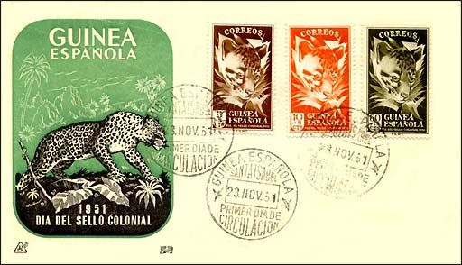
The leopard set was issued on Nov. 23, 1951.
The FDC was cancelled at Santa Isabel. Sc.
B13-15.
|
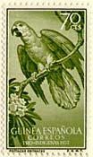 |
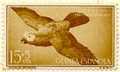 |
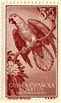 |
The African grey parrot was issued on
June 1, 1957 (Sc. 346, B41-42), with a surtax for children welfare.
|
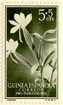 |
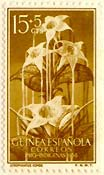 |
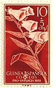 |
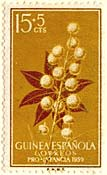 |
The orchids were issued on June 1, 1956,
the surtax being for native welfare work (Sc. B37-38). The flowers were
issued June 1, 1959. Sc. 53-54. The surtax was for children welfare.
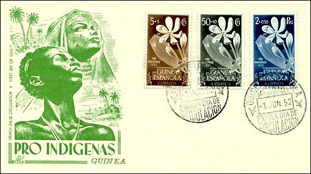
Above on the FDC see a Love Lily, issued on June 1, 1952.
Sc. B19-21. The cachet displays an interesting image of two natives.
|
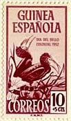 |
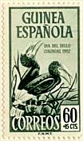 |
Let's close with the Brown-cheeked
Hornbill, issued on June 1, 1952 (Sc. B19 -21).
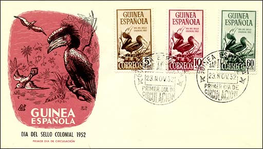
The surtax was in order to help the
native population.
As a final note, just to mention that at
the time when these stamps appeared neither Greenpeace nor WWF nor Earth
First existed, and nevertheless the stamp collectors were very interested in
flowers, animals and birds. And, as much as we know, not a single species of
those shown above disappeared during the about 50 years since the stamps
were issued.
Credits: many thanks to Tracy Barber
(USA) for scans of entire sets.
|